食譜簡介
在烤爐中將材料烤成薄薄的蛋糕，加上了果醬、奶油（混糖奶油、牛奶蛋糊奶油等）和切碎了的果肉，捲成卷狀。
另外可以加上混和的可可粉和咖啡粉，形成鬆軟海綿質感的瑞士卷。
瑞士卷在法國是聖誕蛋糕的一種。
預備食材
雞蛋 4 隻
砂糖 50 克
油 60 克
低筋麵粉 70 克
牛奶 90 克
步驟預覽
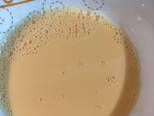
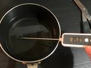
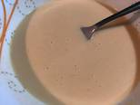
第三步
將熱油倒入已過篩的麵粉當中，攪拌後加入蛋黃牛奶再攪勻，備用。
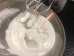
第四步
把糖分3次倒入蛋白中，用打蛋器打至濕性發泡。
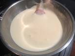
第五步
將1/3的蛋霜倒入備用的蛋黃麵粉中，輕輕拌勻後，將其倒入另外2/3的蛋霜中攪拌均勻。
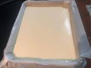
第六步
把蛋霜倒入模具（先鋪好烘焙紙）中，刮平表面後輕輕敲模具數下，減少多餘氣泡。
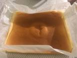
第七步
170°預熱烤爐，把蛋霜放入烤爐同樣170°烤25分鐘，然後轉180°烤5分鐘，取出模具後將蛋糕離模（不用取走烘焙紙）待微暖。
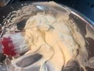
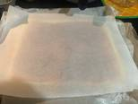
第九步
蛋糕微暖後拿在上面鋪一層烘焙紙，翻到後面把烤過的烘培紙拿走。
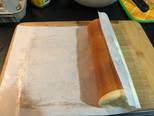
第十步
抹上鮮奶油，捲起蛋糕後切件，放入冰箱擱置30分鐘。
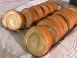